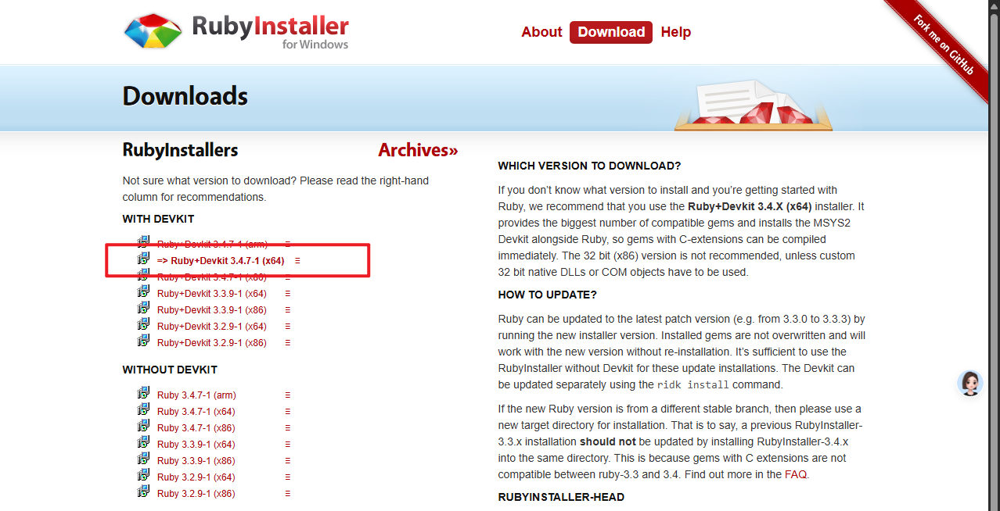
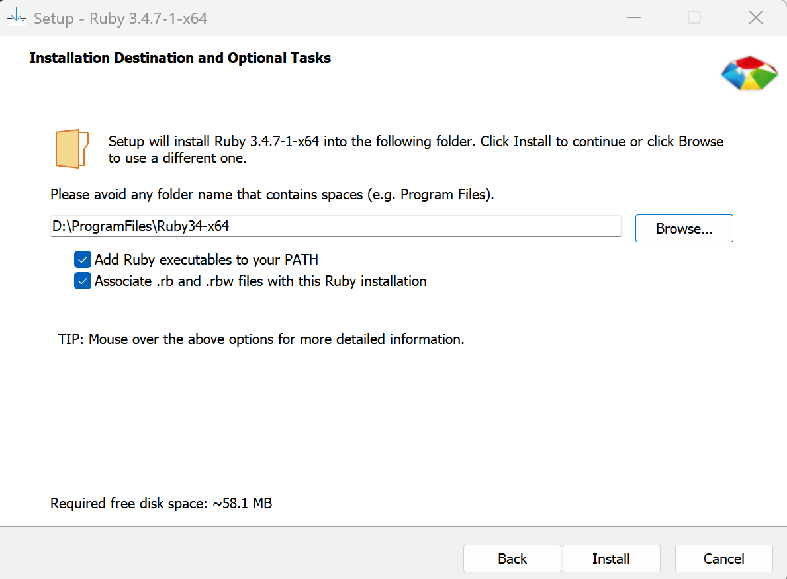
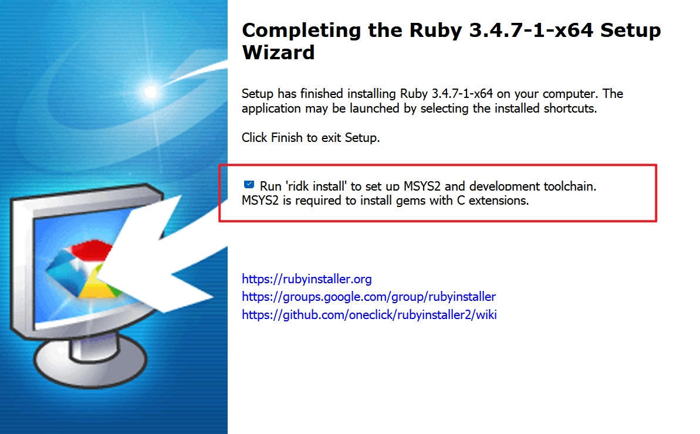
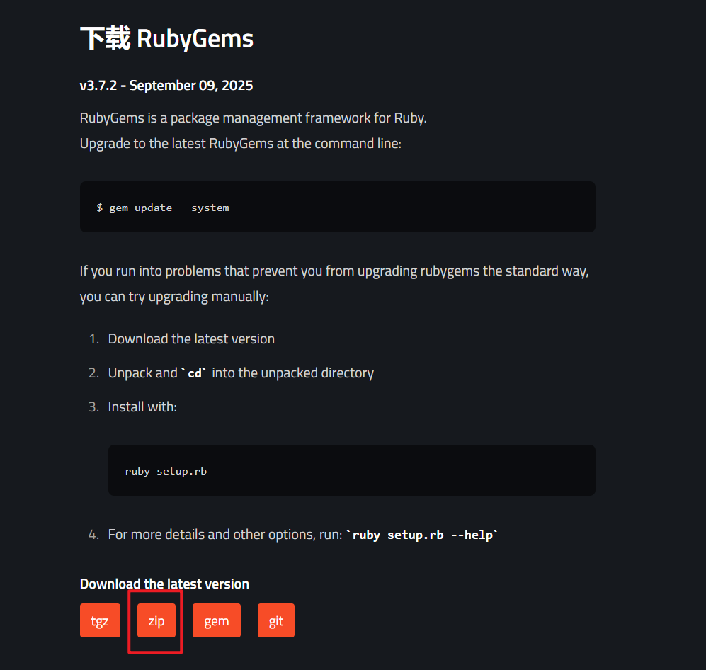
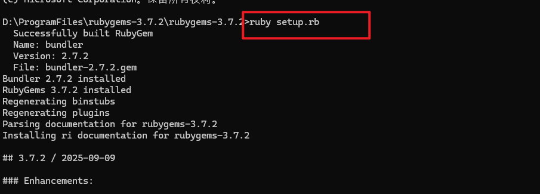
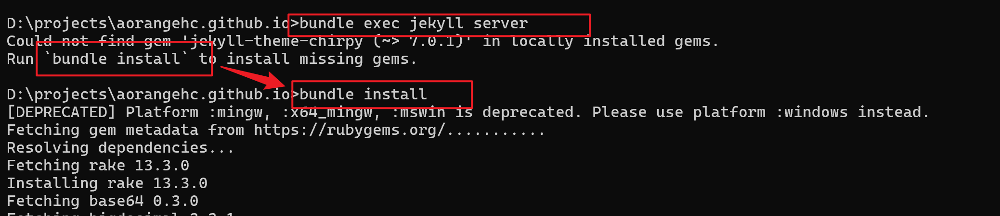
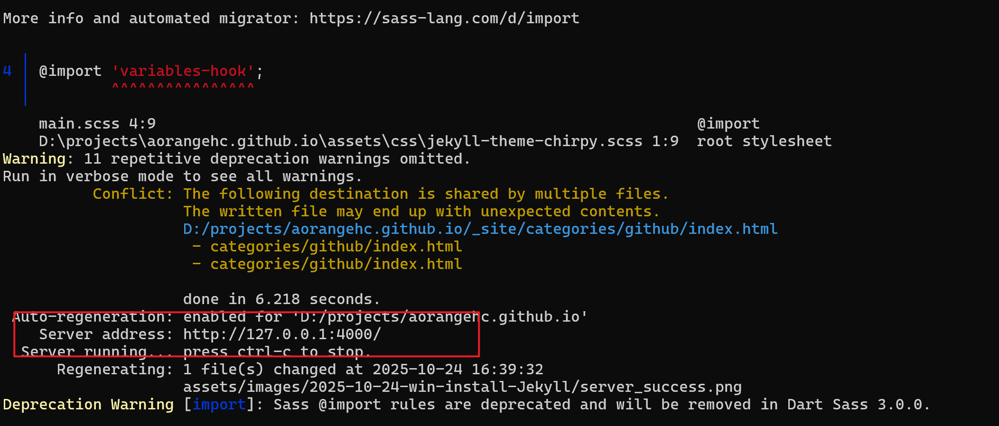
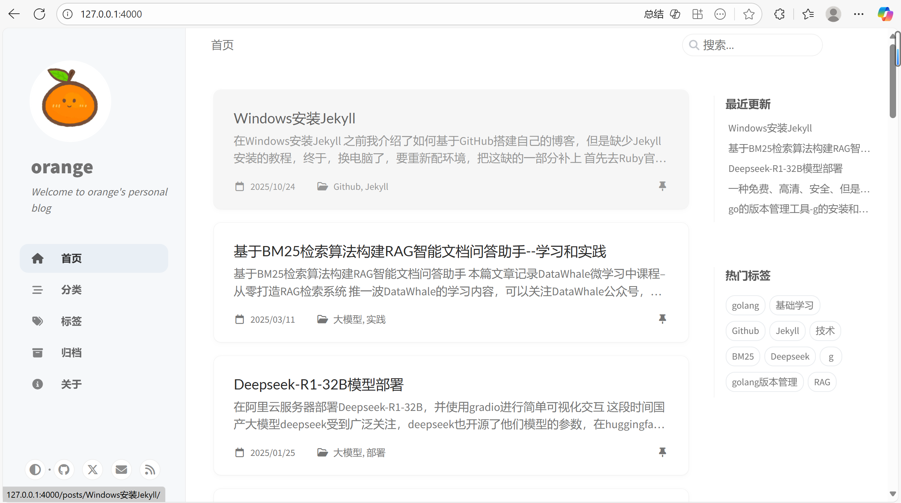

Windows安装Jekyll
GitHub
Blog
Jekyll
在Windows上轻松安装Jekyll：打造你的个人博客
之前分享了如何在GitHub上搭建个人博客，但缺少Jekyll的安装教程。最近换了新电脑，正好借此机会补上这个重要的环节，为想要搭建技术博客的朋友们提供一份详细的Windows安装指南。
第一步：安装Ruby环境
Jekyll基于Ruby开发，所以我们首先需要安装Ruby环境：
- 访问Ruby官网下载适合你的RubyInstaller
- 我选择的是rubyinstaller-devkit-3.4.7-1-x64版本
- 你也可以根据系统配置选择合适的版本

安装时的关键步骤：
- 双击下载的安装程序，按提示进行安装
- 重要：务必勾选”添加到PATH”选项，方便在命令行中直接使用
- 安装过程中会自动安装MSYS2，这是后续安装gem和Jekyll的必要组件

安装完成后，打开命令提示符测试是否安装成功：
ruby -v
第二步：安装RubyGems
RubyGems是Ruby的包管理器，我们需要用它来安装Jekyll：
- 前往RubyGems下载页面
- 选择ZIP格式下载

安装步骤：
- 将下载的ZIP文件解压到合适的目录
- 在解压后的文件夹中打开命令提示符
- 运行安装命令：
ruby setup.rb
第三步：安装Jekyll及相关组件
现在我们可以开始安装Jekyll了：
安装Jekyll核心：
gem install jekyll安装分页插件（很多主题都需要）：
gem install jekyll-paginate验证安装是否成功：
jekyll -v第四步：本地测试
在你的Jekyll博客目录中，启动本地服务器：
bundle exec jekyll server如果提示缺少某些插件，按照提示安装即可：

安装完成后重新运行，看到成功提示：

在浏览器中访问 http://localhost:4000，就能看到你的博客在本地运行的效果了！

安装完成！🎉
恭喜！现在你已经在Windows上成功安装了Jekyll，可以开始本地开发和测试你的博客了。如果在安装过程中遇到任何问题，欢迎在评论区留言交流。
贴心提示：建议将整个安装过程记录下来，这样下次换电脑或者重装系统时就能快速完成环境配置。
参考资源：在Windows上安装Jekyll
博客作者简介 大家好，我是一名热爱分享的技术博主，专注于Web开发和开源技术。通过这个博客，我希望与大家分享我的学习心得和实践经验，帮助更多开发者解决实际问题。如果你对技术分享感兴趣，欢迎关注我的博客，我们一起成长！